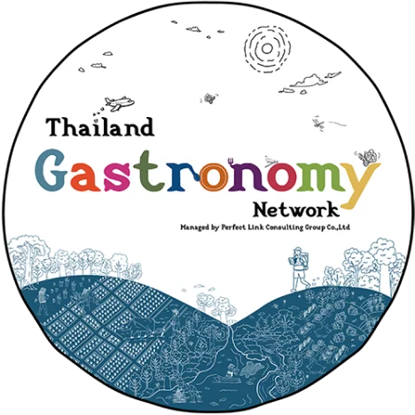
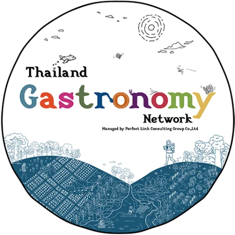

Eat the East : The Grand Road Trip
เดินทางสู่ภาคตะวันออก 9 จังหวัด เปิดมุมมองใหม่ ให้รสชาตินำทาง
เมื่อการตามหา “รส” กลายเป็นเข็มทิศนำทางที่ลึกซึ้งกว่าการตามหา “ร้าน” Gastronomad จุดประกายการ เดินทางแบบ Road Trip ไปตามหารสชาติแห่งภาคตะวันออก 9 จังหวัด คุณจะได้สัมผัสจิตวิญญาณท้องถิ่น ผ่านวัตถุดิบ เรื่องเล่าและวิถีชีวิตของผู้คน ในพื้นที่ภาคตะวันออกของประเทศไทย ซึ่งโดดเด่นด้วยวัฒนธรรม อาหารที่หลากหลาย ครอบคลุมตั้งแต่อาหารลุ่มน้ำ อาหารทะเล อาหารสมุนไพร อาหารจากสวนผลไม้ ไป จนถึงอาหารที่สะท้อนอิทธิพลทางวัฒนธรรมและชาติพันธุ์ในแต่ละจังหวัด เพื่อสร้าง ประสบการณ์แห่งรสชาติที่ น่าจดจำ
“Every Route Tastes Like the East”
การเดินทางที่สร้างสรรค์โดย ผู้เชี่ยวชาญด้านการท่องเที่ยวและวัฒนธรรมอาหารไทย
การท่องเที่ยวแห่งประเทศไทย บัตรเครดิตเคทีซีและ Thailand Gastronomy Network (เครือข่าย วัฒนธรรมอาหารประเทศไทย) ร่วมสร้างสรรค์โครงการ Eat the East : The Grand Road Trip การ เดินทางตามหารสชาติเฉพาะตัวของภาคตะวันออก 9 จังหวัด เปิดต่อมรับรสทุกมิติ เที่ยวไป ชิมไป เดินทางไป พร้อมกับยานยนต์คู่ใจ พบจุดหมายใน 9 จังหวัด ซึ่งมีเสน่ห์ที่ต่างกัน


 


การเดินทางที่สร้างสรรค์โดย ผู้เชี่ยวชาญด้านการท่องเที่ยวและวัฒนธรรมอาหารไทย
เดินทางสู่ภาคตะวันออก 9 จังหวัด เปิดมุมมองใหม่ ให้รสชาตินำทาง


สมุทรปราการ - Gateway to the Flavour Road
เมืองเริ่มต้นของการเดินทาง เชื่อมกรุงเทพฯ สู่ ภาคตะวันออก ผ่านอาหารชุมชนลุ่มน้ำเจ้าพระยา-บางกระเจ้า วิถีสวน ครัวบ้าน และอาหารใกล้เมือง ที่เข้าถึงง่าย สะท้อนแนวคิดเมืองที่เป็นปอดของมหานคร และ แหล่งอาหาร Heal ใจ Heal กาย
ฉะเชิงเทรา - Bang Pakong River Feast
เมืองแห่งรสชาติจากสายน้ำและความศรัทธา อาหารลุ่ม น้ำบางปะกงเป็นหัวใจหลัก เชื่อมปลาแม่น้ำ ครัวชุมชน วิถีศรัทธา และอาหารมงคล เกิดเรื่องเล่า “Eat - Pray - Travel” ที่สะท้อนความผูกพันระหว่างอาหาร วิถีชีวิต และความเชื่อ
ชลบุรี - Seafood Capital & Coastal Living Paradise
รสชาติทะเลใกล้เมือง เมืองชายฝั่งที่ ผสมผสานอาหารทะเลสด วิถีเมืองชายทะเล และไลฟ์สไตล์ร่วมสมัย เหมาะกับการท่องเที่ยวแบบ Urban Taste Hopping ระหว่างพัทยา-บางแสน
ระยอง - Slow Coast & Fruit Valley
ทะเลที่มีจังหวะช้าลง อาหารพื้นถิ่นตามฤดูกาล เมืองที่ เชื่อมอาหารทะเลตามฤดูกาล ถ่ายทอดเรื่องราว Sea-to-Valley และการกินอยู่ตามจังหวะธรรมชาติ
จันทบุรี - Herbs Route & Heritage Food
สมุนไพร อาหารพื้นถิ่น และมรดกวัฒนธรรม อัต ลักษณ์อาหารจากสมุนไพร เครื่องเทศ และครัวชุมชนเก่าแก่ ผสานเรื่องเล่าทางประวัติศาสตร์และพหุ วัฒนธรรม
ตราด - Island-to-Table Gastronomy
จากป่าชายเลน สู่จานอาหาร อาหารจากเกาะ ทะเล และ ชุมชนชายฝั่ง ถ่ายทอดแนวคิด “กินตามฤดูกาล” และรสมือชาวสวน ชาวเล ชาวเกาะ
นครนายก - Green Adventure Taste
อาหารจากป่า น้ำ และการผจญภัยสีเขียว อาหารท้องถิ่น เชื่อมธรรมชาติ ป่าเขา และกิจกรรมกลางแจ้ง สะท้อนความสด สะอาด และการกินอยู่ใกล้ธรรมชาติ
ปราจีนบุรี - Herbal Wisdom & Wellness Flavour
ภูมิปัญญาสมุนไพรกับอาหารเพื่อสุขภาพ อาหารสมุนไพรและวัฒนธรรมการดูแลสุขภาพ เชื่อมโยงกับ Wellness Tourism และภูมิปัญญา ท้องถิ่น
สระแก้ว - Frontier Flavours
รสชาติชายแดนและอัตลักษณ์ข้ามวัฒนธรรม อาหารที่สะท้อน อิทธิพลวัฒนธรรมชายแดนและชาติพันธุ์ เป็น “รสชาติชายขอบ” ที่ช่วยเติมมิติความหลากหลายใน
โยนไกด์บุ๊คทิ้งไป แล้วใช้ “รสชาติ” นำทาง
มาร่วมสนุกกับการออกแบบเส้นทางใน 3 ธีมหลัก แล้วดูว่าคุณจะพบ รสชาติอะไรระหว่างทาง


ไม่ว่าคุณจะเป็นใคร นักเดินทางสายช้าแต่มีคุณภาพ นักเดินทางสายกิน สายโซเชียล หรือนักเดินทางท่องเที่ยว แบบเหย้า-เยือนที่มีเพื่อนเจ้าถิ่นรออยู่ในภาคตะวันออก คุณก็คือคนที่เรามองหา มาร่วมสร้างสรรค์แคมเปญ ท่องเที่ยวแบบ Road Trip สู่เส้นทางภาคตะวันออก ที่ตัวคุณเองจะให้นิยามรสชาติใหม่ สไตล์คุณ ในฐานะที่ เป็น Gastronomad Ambassador ได้เช่นกัน
Eat the East: The Grand Road Trip
ใช้อาหารนำทางการเดินทาง สร้างประสบการณ์ตามหารสชาติของ ภาคตะวันออก ที่เต็มไปด้วยสีสันภาคตะวันออก เปิดประสบการณ์แบบ Road Trip ขั้นสุดด้วยสิทธิพิเศษ จาก บัตรเครดิต KTC ที่มัดรวมคาเฟ่ ร้านอาหาร โรงแรมเก๋ ไม่ต่ำกว่า 100 แห่งใน 9 จังหวัด พร้อมส่วนลดพิเศษ เฉพาะผู้ถือบัตร Top Up และด้วยคะแนนสะสมพิเศษ ที่มอบอภิสิทธิ์เกิน คุ้ม คลิกดูรายละเอียดได้ที่ link นี้ XXXXXXX
#EattheEast #สีสันตะวันออก #Gastronomad #KTC #Thailandgastronomy #Amazingthailand
ติดตามแคมเปญได้ที่